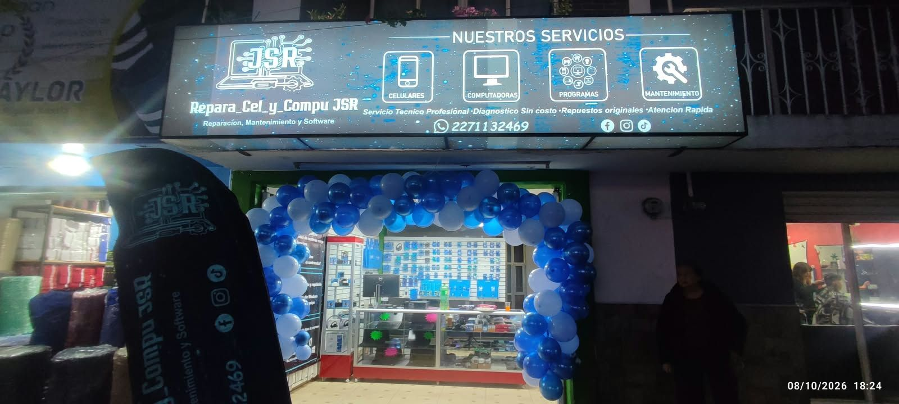
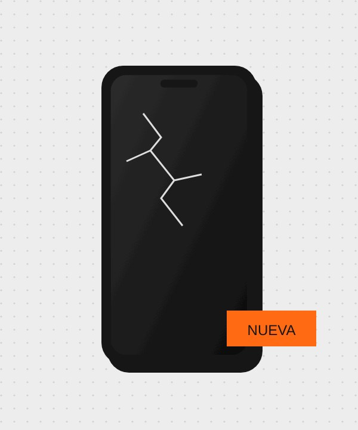
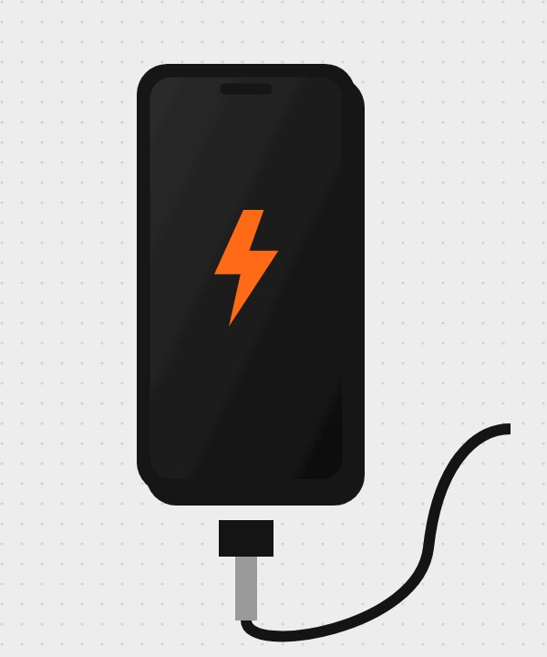

Sabemos lo importante que es tu celular o computadora para tu trabajo o escuela. Por eso lo dejamos funcionando como debe.
Revisamos tu equipo con cuidado antes de repararlo.
Atendemos teléfonos y computadoras en un solo lugar.
Estamos en San Miguel Xoxtla para cuando nos necesites.
En Repara Cell y Compu damos servicio técnico a celulares y computadoras: cambiamos pantallas y centros de carga, desbloqueamos, liberamos y rescatamos equipos que se mojaron.

¿Se estrelló o ya no responde al tacto? Cambiamos la pantalla de tu celular.

Si tu celular ya no carga o lo hace a medias, cambiamos el centro de carga.
Servicio técnico profesional para celulares y computadoras en San Miguel Xoxtla.
Síguenos en Facebook ›